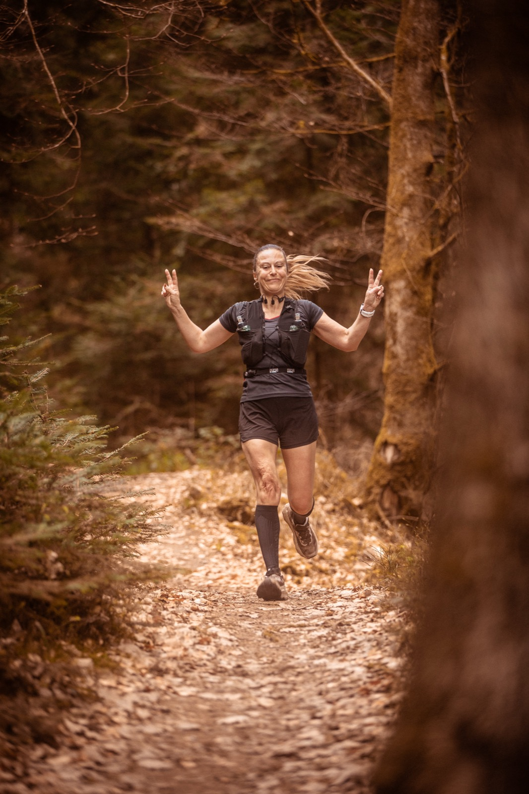

Courez au lever du jour.
Deux parcours autour d'un lac de montagne, un dossard, et une communauté qui court pour le plaisir d'y être.

Deux distances, un seul terrain de jeu.
Deux boucles autour du lac. Profils altimétriques, traces GPX et tous les détails sur la page des courses.

La Grande Boucle
En bordure du Lac de Pierre-Percée. Crêtes, forêts et passages techniques pour les coureurs qui veulent du dénivelé et de l'engagement.

La Découverte
Un format accessible pour entrer dans le trail sans renoncer aux paysages. Idéal pour une première course ou un retour en douceur.
Tout l'événement, page par page.
L'Événement →
L'esprit LIGHT ON, le programme du week-end, le lieu et nos engagements éco-responsables.
Infos Pratiques →
Dossards, horaires de départ, matériel obligatoire, ravitaillements, balisage et sécurité.
Médias →
Le film de l'édition, les photos de course et les résultats par épreuve.
Communauté →
Le LIGHT ON Club, les bénévoles, les partenaires et le contact.

Prenez le départ en 2027.
Les inscriptions au Trail Pierre-Percée ouvrent le 1er octobre 2026. Choisissez votre distance et rejoignez la communauté LIGHT ON le 4 avril 2027.